📅【杭州八天七夜 行程總表】
| 星期日 | 星期一 | 星期二 | 星期三 | 星期四 | 星期五 | 星期六 |
|---|---|---|---|---|---|---|
| 6/28 | 6/29 | 6/30 | 7/1 | 7/2 | 7/3 | 7/4 |
| 7/5 | 7/6 | 7/7 | 7/8 | 7/9 | 7/10 | 7/11 |
| 7/12 | 7/13 | 7/14 | 7/15 | 7/16 | 7/17 | 7/18 |
| 7/19 | 7/20 | 7/21 | 7/22 | 7/23 | 7/24 | 7/25 |
📌 杭州七月平均氣溫約 26–32 °C、濕熱午後可能有雷雨，出發前帶雨具 & 防曬用品最安心。
💰 車資：地鐵單程約 2–9 元 RMB、公車約 2 元 RMB、共享單車初半小時1–2 元 RMB；
🍽 餐食：早餐約 20–40 元 RMB/人、午餐 40–80 元、晚餐 80–150 元（風味餐）不含飲料與額外點單。
| 📆 日期 | 🌆 行程 & 景點 | 🚇 最近地鐵站 | 🚍 交通費估計 | 🍛 餐食 | 🌤 天氣估 |
|---|---|---|---|---|---|
| Day 1 | 抵達 → 西湖散策 → 湖濱步行街 | 西湖文化廣場站 | 地鐵 ~2–3 元 | 晚餐 河坊街小吃 ~80 元 | 約 31°C 陣雨機會高 |
| Day 2 | 西湖十景：蘇堤、斷橋殘雪 → 雷峰塔 | Wushan Square（7/線） | 地鐵 ~3–6 元 + 雷峰塔票約 40 元 | 午 ~80 元｜晚 湖畔餐廳 ~120 元 | 濕熱 30–32°C |
| Day 3 | 靈隱寺 + 飛來峰 → 下午 龍井茶村漫遊 | 靈隱寺需公車/轉乘 | 公車 ~5–8 元｜出租/叫車 ~30+ 元 | 午 ~90 元｜晚 ~100 元 | 濕熱可能午後雨 |
| Day 4 | 西溪濕地公園 → 晚上 武林夜市 | 地鐵可達 + 轉接 | 地鐵 ~4–7 元 | 午 ~70 元｜夜市 ~100 元 | 31°C 多雲 |
| Day 5 | 城市一日遊：浙江博物館 → 河坊街老街 | 浙江博物館站 | 地鐵 ~3–6 元 | 午 ~60 元｜晚~90 元 | 濕熱帶驟雨 |
| Day 6 | 西湖遊船／船遊大碼頭 → 晚上自由時間 | 中山北路站 | 地鐵 ~3–6 元 + 船票 ~60–90 元 | 午 ~70§│晚 ~100 元 | 30–32°C |
| Day 7 | 良渚文化遺址／博物院 或 宋城主題樂園 | 地鐵 + 公車 | 地鐵 ~5–8 元 + 門票 ~100–150 元 | 午 ~70–100 元｜晚 ~100–150 元 | 濕熱午後雨 |
| Day 8 | 返程 | — | 交通依航班 | 早餐 ~30 元 | 出發日氣溫類似 |
地鐵
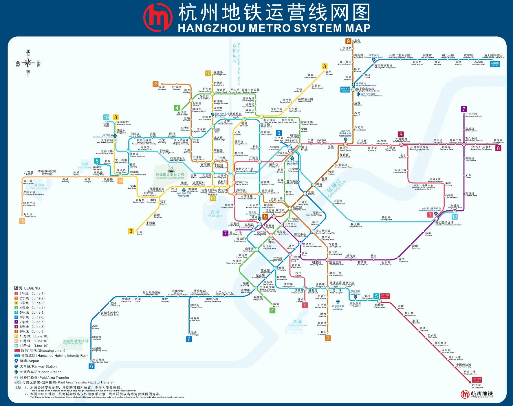
地鐵 1 號線： 這條路線很容易搭到，連接了杭州重要的路上和空中交通樞紐，包括杭州蕭山機場、杭州東站（火車、高鐵），並可前往西風名勝風景區。
地鐵 2 號線： 2 號線可以前往許多杭州知名景點區，包括西湖、良渚文化村、錢江世紀城。
地鐵 3 號線： 我覺得是景點密集度很高的一條，沿線有許多知名景點，像是黃龍洞、武林商圈、西溪國家濕地公園、靈隱寺、雷峰塔和西湖。
地鐵 4 號線： 如果想要去欣賞錢江美景，可透過地鐵 4 號線前往錢江路。
地鐵 5 號線： 地鐵 5 號線橫跨杭州市區，並行駛過世界文化遺產－京杭大運河。
地鐵 7 號線： 連接機場到市區的重要地鐵路線，是旅客前往市區方便的交通路線。
地鐵 19 號線： 又稱「杭州機場快線」，停靠站少，可從蕭山國際機場到杭州東站，如果你跟我一樣不喜歡轉車，這條真的省時很多。
詳細行程路線與規劃
📍 Day 1｜抵達 → 西湖散步 → 湖濱商圈
📍 交通路線建議:
✈️ 從杭州蕭山國際機場（HGH）到市區（西湖文化廣場站）
搭 地鐵 19 號線 → 於 西湖文化廣場站 下車。
📍 市區動線
下車 → 步行至 西湖（湖濱/斷橋方向）
晚上散步 湖濱步行街美食街
📍 晚上返程
從 湖濱／西湖文化廣場站 乘地鐵回飯店附近站
📍 Day 2｜西湖北段一日遊（蘇堤→斷橋→雷峰塔）
📍 交通路線建議:
📍 起點 → 西湖文化廣場站（Line 1/3/19）
👉 從飯店步行或搭地鐵到 西湖文化廣場站 抵達西湖主要觀光區。
🅿️ 景點徒步（沿湖步行最方便）
斷橋 → 蘇堤
中午沿湖邊餐廳用餐 → 下午走到 雷峰塔
📍 返回（晚上）
從 西湖文化廣場站 或 湖濱地鐵站 乘車回旅館
📍 Day 3｜靈隱寺 + 飛來峰 + 龍井茶村
📍 交通路線建議:
📍 起點 → 地鐵 1 號線 → 龍翔橋站
👉 你可以在 龍翔橋站（1 號線） 出站後步行或轉乘 7 路公車/7W 路 前往 靈隱寺（抵達後步行約 450 m）。
🚍 靈隱寺 → 龍井茶村
可搭 公車/出租 或網約車前往（約 20–30 分鐘）。公車選擇需看現場站牌（隨季與景區流量調整）。
📌 回程
返 龍翔橋地鐵站 → 市區各地
📍 Day 4｜西溪濕地 & 武林夜市
📍 交通路線建議:
📍 起點 → 地鐵 3 號線 → 西溪濕地南站
由此站出站後可步行或騎車進入西溪濕地區域。
📍 晚間回程至 武林夜市
從 西溪濕地南站 → 乘地鐵 3 號線 → 於 武林廣場站 下車
步行抵達 武林夜市 美食區
📍 晚上返程
從 武林廣場站 搭地鐵回住處
📍 Day 5｜博物館＋河坊街老街
📍 交通路線建議:
📍 起點 → 地鐵 4 號線 → 安徽中路站（或搭地鐵 1/2/3 → 轉到 4 號線）
👉 抵達 浙江博物館附近或步行至河坊街老街。
📍 行程安排
上午 博物館
午後步行至 河坊街老街 吃小吃探索
📍 晚間返程
從 車站 搭地鐵回飯店
📍 Day 6｜西湖遊船 + 自由夜間行程
📍 交通路線建議:
📍 先抵 中山北路站 / 湖濱站
步行至 西湖遊船碼頭（大碼頭 / 小碼頭）
乘船遊湖看景
📍 晚間自由安排
可前往 河坊街或夜市區域
📍 船後返程
從湖濱或西湖文化廣場站搭地鐵回
📍 Day 7｜良渚文化遺址博物院 or 宋城主題樂園
📍 交通路線建議 A｜良渚文化遺址
🚇 地鐵 2 號線 → 良渚站 出站後視現場交通（公車/步行）至博物院
📍 交通路線建議 B｜宋城主題樂園
🚇 地鐵 1/7/19 → 至 市區站 → 搭公交或出租車前往樂園
📍 Day 8｜返程
📍 交通路線建議:
📍 飯店 → 地鐵站 → 某地鐵 19/1/機場線 → 蕭山機場
✨ 提醒：
👉 若你的班機早於 06:00–07:00，就要改搭 機場大巴 / 出租車 / 叫車軟體接送；地鐵基本是早上約 06:00 才開始營運。
🗺️ 精選景點＋特色介紹
📍 西湖風景區
杭州市最經典的湖泊公園，融合山水與人文（蘇堤、斷橋、花港觀魚、柳浪聞鶯等）是必訪地。免費開放，但部分景點如雷峰塔需門票。
📍 👑 雷峰塔
重建的五層八角塔，有文化展覽與絕佳湖景視角，適合登高拍照。票約40 元/人。 位于杭州市西湖南岸的夕照山上，始建于公元977年（北宋），因《白蛇傳》傳說而聞名。舊塔於1924年坍塌，現存建築為2002年重建的新塔。
📍 靈隱寺
中國著名古剎，可感受千年佛教歷史與飛來峰石刻（需票）。靠公交或網約車較方便，地鐵無直達。 靈隱寺位於杭州西湖靈隱山麓，背靠北高峰、面朝飛來峰，建於東晉咸和3年(西元328年)，是江南著名古剎之一，北宋時氣象恢宏的靈隱寺列為禪院五山之首，又稱為「雲林禪寺」；相傳靈隱寺的命名由來，是在東晉咸和初有位西印度僧人慧理和尚，自中原遊浙江至武林(即今日杭州），看見這裡山峰奇秀而嘆曰：「此乃中天竺國靈鷲山一小嶺，不知何以飛來？佛在世日，多為仙靈所隱，遂於峰前建寺，名曰靈隱」便在此建寺並取名為靈隱寺，後來濟公在此出家靈隱寺也因此聞名，而杭州少見的古代石窟藝術瑰寶「飛來峰」的名稱也是由此而來。
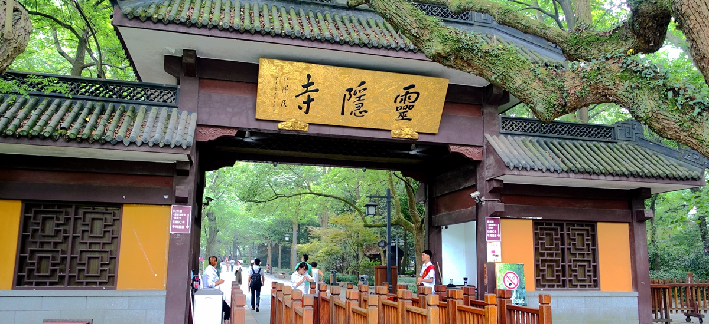
📍 西溪濕地
城市中的濕地公園，能搭乘小舟穿梭水道，體驗自然與生態。交通可搭公交或網約車。
📍 龍井茶村
杭州的龍井茶村（主要指龍井村及梅家塢）位於西湖風景區西南面，是「西湖龍井」的核心產區。這裡群山環抱、茶園梯田綿延，旅客可在此體驗道地的採茶、炒茶與品茗文化，並欣賞清幽的自然與茶鄉風光。
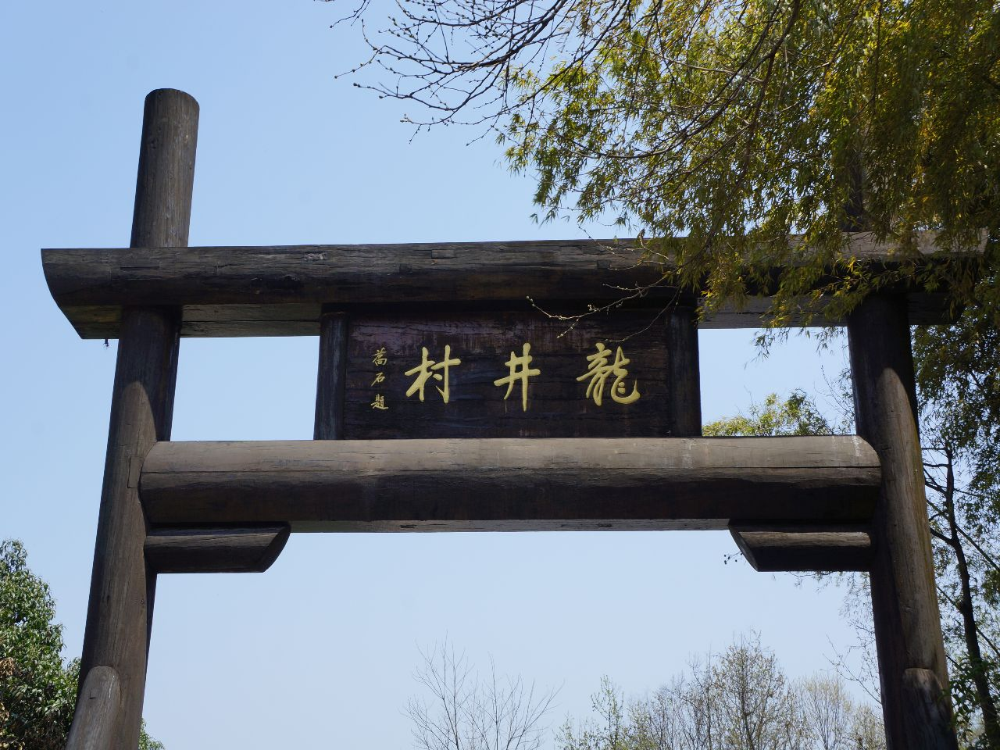
📍 武林夜市
夜晚美食街，有特色小吃、地道小店，是在地人與遊客都愛的夜間熱鬧點。
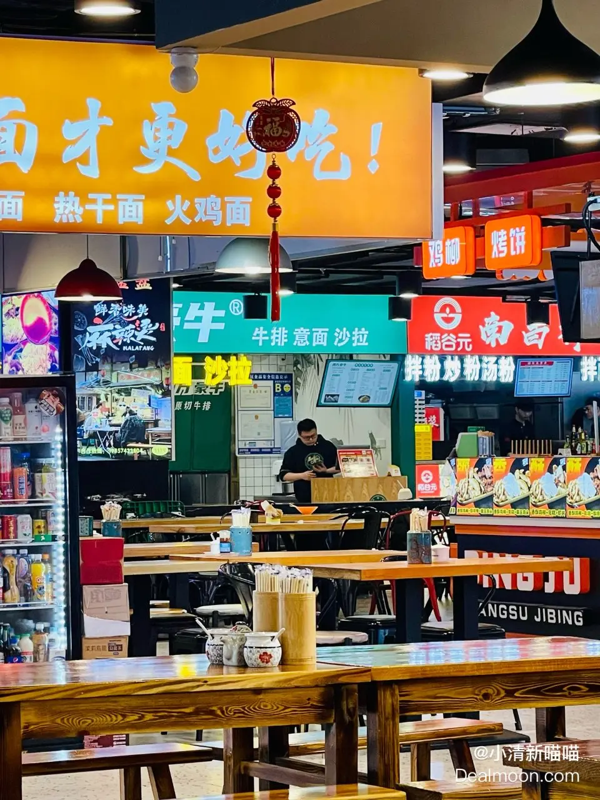
📍 良渚文化遺址博物院
世界文化遺產遺址博物館，適合喜愛文化史與考古的旅人（需票）。 良渚博物院位於杭州市餘杭區美麗洲公園內，是一座專門展示良渚文化與良渚遺址的考古遺址博物館。作為實證「中華五千年文明史」的核心聖地，館內典藏大量距今5300-4300年的精美玉器，是認識中國史前文明必訪的文化地標。
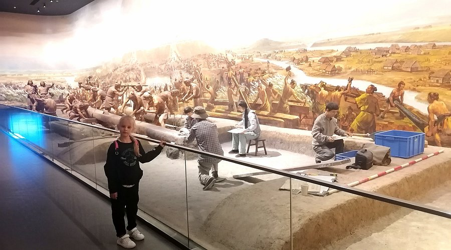
1. 西湖風景名勝區 (West Lake)
這是杭州的名片，也是世界文化遺產。西湖面積廣大，建議挑選精華區段遊覽。
推薦亮點： 斷橋殘雪、蘇堤春曉、雷峰夕照、花港觀魚。
交通：
- 地鐵 1 號線「龍翔橋」站：最熱鬧的出入口，靠近湖濱銀泰。
- 地鐵 3 號線「黃龍洞」站：靠近北山路，適合前往斷橋。
遊玩建議： 建議步行結合乘船（從一公園或五公園碼頭上船前往湖心亭、三潭印月）。

2. 靈隱景區 & 飛來峰 (Lingyin Temple)
千年古剎，是中國最早的佛教寺院之一，環境清幽且極具靈氣。
推薦亮點： 靈隱寺建築、飛來峰石窟造像、永福寺（景觀極佳）。
交通：
- 地鐵 3 號線/10 號線「黃龍體育中心」站出站後，換乘「靈隱專線」公交直達。
- 地鐵 1 號線「龍翔橋」站也有 7 路公交車直達。
注意： 進入靈隱寺需先購買飛來峰景區門票，再進入寺廟內購買香花券。
3. 清河坊歷史街區 & 南宋御街 (Hefang Street)
杭州保留最完整的舊城區，展現了南宋時期的市井風貌。 清河坊歷史街區」位於杭州上城區吳山腳下，是杭州目前唯一保存最完整的舊街區。街區以清末民初的仿古建築為主，融合了南宋時期的歷史文化底蘊，是體驗杭州傳統市井生活、品嚐在地小吃與購買特色伴手禮的必訪景點。
推薦亮點： 胡慶餘堂、朱炳仁銅雕館、特色小吃、古建築群。
交通：
- 地鐵 7 號線/15 號線「江城路」站。
- 地鐵 1 號線「定安路」站，步行約 10 分鐘即可到達。
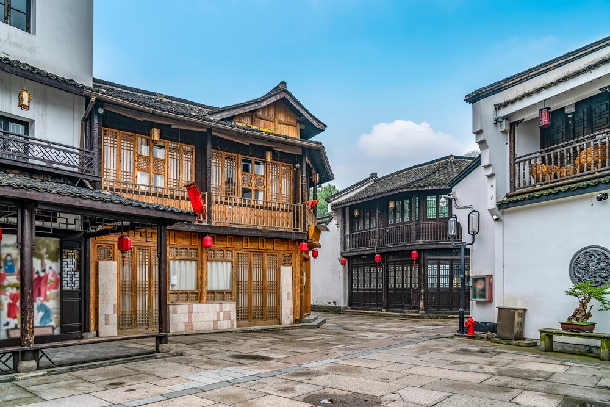
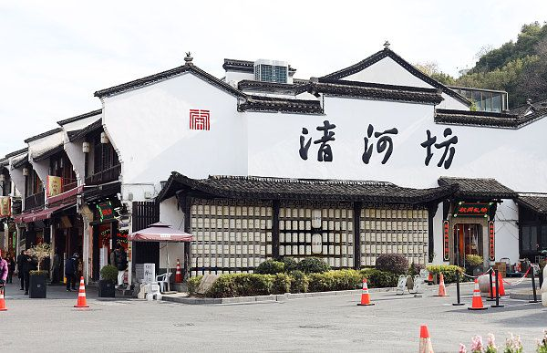
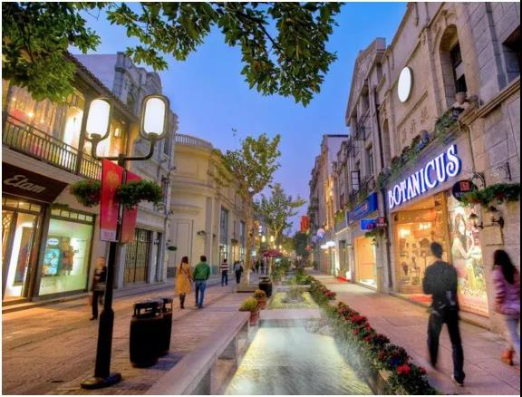
4. 京杭大運河（杭州段）& 拱宸橋 (Grand Canal)
體驗除了西湖以外的另一種水鄉風情。 京杭大运河杭州段是世界上最长古代运河的最南端，北起余杭塘栖、南至钱塘江，全長約39公里。它在2014年被列入世界文化遺產名錄。沿岸串聯了豐富的歷史文化街區與景點，是探索杭州水鄉文化與市井風情的核心區域。
推薦亮點： 拱宸橋、橋西歷史街區、刀剪劍博物館。
交通：
- 地鐵 5 號線「大運河」站。
獨特推薦： 在「武林門碼頭」乘坐水上巴士 1 號線（僅需 3 元人民幣），一路坐到拱宸橋，這是最具性價比的運河遊覽方式。
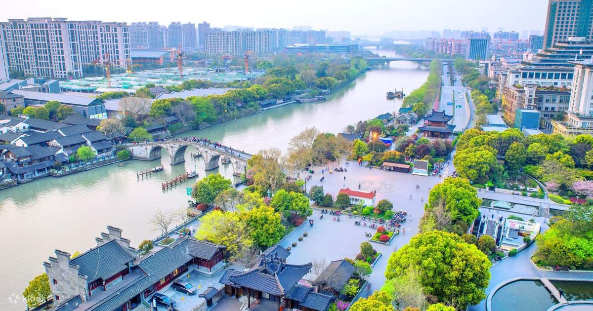
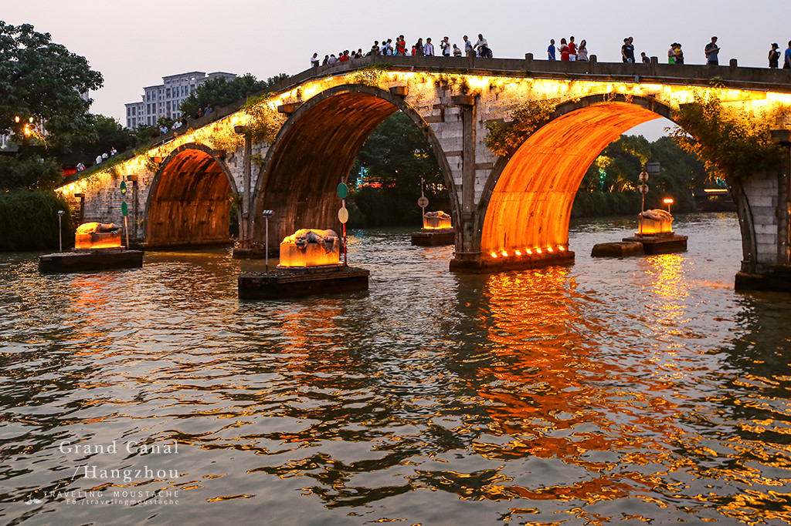
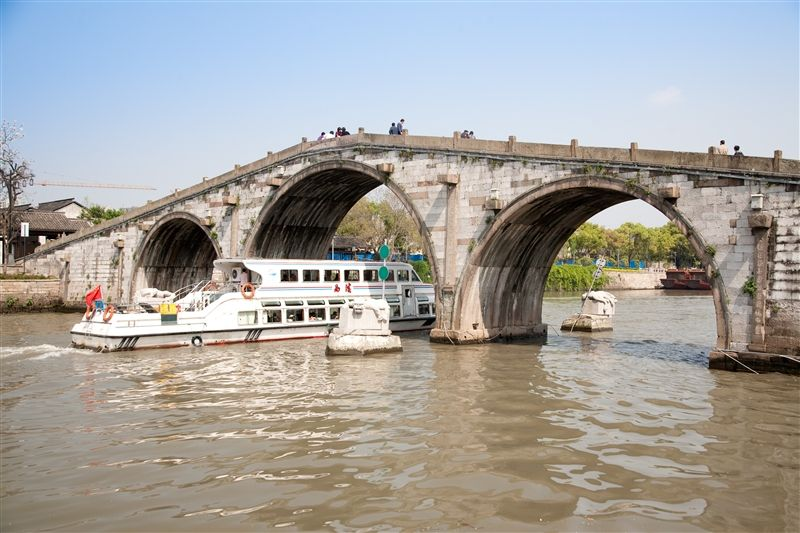
5. 小河直街 (Xiaohe Straight Street)
比清河坊更安靜、更具生活氣息的水岸老街，非常適合拍照。 杭州小河直街位於杭州市拱墅區京杭大運河畔，是保留清末民初江南水鄉風貌的歷史文化街區。這裡以「白牆黛瓦」的老宅與豐富的文青咖啡館聞名，非常適合漫步、品茗與河畔打卡。
推薦亮點： 白牆黛瓦的江南民居、文藝咖啡館、运河支流景致。
交通：
- 地鐵 10 號線「和睦」站，出站後步行或打車起步價即可抵達；亦可由拱宸橋區域步行沿河而下抵達。
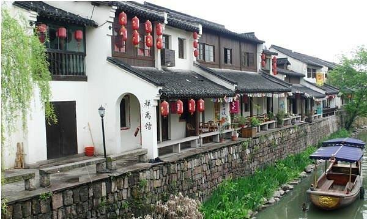


6. 西溪國家濕地公園 (Xixi Wetland)
《非誠勿擾》拍攝地，是中國首個國家級濕地公園。
推薦亮點： 乘搖櫓船穿梭於河道、深潭口、河渚街。
交通：
- 地鐵 3 號線「西溪濕地南」站或「西溪濕地北」站。
🍜 必吃杭州美食推薦
你一定要試的地道口味👇
- 🍲 西湖醋魚 – 甜酸口味的江浙名菜
- 🥢 東坡肉 – 入口即化的經典杭州佳餚
- 🍜 片兒川麵 – 有鮮香湯頭的本地麵食
- 🥟 知味觀小吃 – 傳統本幫小食集合
- 🍡 河坊街小吃 – 街邊吃喝逛街一條龍
有名夜市小吃
🏮 1️⃣ 武林夜市（最推薦｜市中心首選）
📍 位置：武林廣場附近
🚇 地鐵：1 / 3 號線【武林廣場站】
⏰ 時間：約 17:30 – 23:00
特色
- 杭州最有名、觀光客＋在地人都愛
- 小吃選擇最多，第一次來杭州一定要逛
- 氣氛熱鬧但不擁擠
必吃
- 蔥包檜（杭州夜市靈魂）
- 炸臭豆腐
- 定勝糕
- 烤魷魚、炸串
💰 人均：50–100 RMB
🏮 2️⃣ 河坊街夜市（古街＋小吃）
📍 位置：南宋御街
🚇 地鐵：7 號線【吳山廣場站】
⏰ 時間：白天到晚上（夜晚最熱鬧）
特色
- 明清風格老街，邊吃邊逛
- 適合第一次來、想拍照打卡
- 小吃偏傳統杭州味
必吃
- 知味觀小籠包
- 龍鬚糖
- 桂花糕
- 糖藕
💰 人均：60–120 RMB
🏮 3️⃣ 湖濱步行街夜市（西湖夜景）
📍 位置：西湖湖濱商圈
🚇 地鐵：1 號線【龍翔橋站】
⏰ 時間：18:00 – 22:30
特色
- 夜晚看西湖＋吃小吃，一次滿足
- 商場＋夜市混合型
- 適合散步、情侶行程
必吃
- 西湖醋魚小份版
- 烤生蠔
- 奶茶、甜品
💰 人均：80–150 RMB
🏮 4️⃣ 勝利河美食街（在地人愛）
📍 位置：拱墅區
🚇 地鐵：5 號線【拱宸橋東站】
⏰ 時間：傍晚至深夜
特色
- 在地人比例超高
- 夜宵、熱炒、燒烤一條街
- 口味偏重、份量大
必吃
- 小龍蝦
- 燒烤串
- 炒螺螄
- 啤酒＋熱炒
💰 人均：80–150 RMB
🏮 5️⃣ 龍翔橋地下夜市（便宜快速）
📍 位置：龍翔橋地鐵站地下
🚇 地鐵：1 號線【龍翔橋站】
⏰ 時間：16:00 – 22:00
特色
- 下雨天、趕時間首選
- 價格便宜、速度快
- 適合補吃小點
💰 人均：30–60 RMB
🍜 杭州著名小吃必吃清單（夜市會遇到）
🥞 蔥包檜（杭州 NO.1 街頭小吃）
薄餅包油條＋蔥＋甜麵醬
外酥內香，一定要熱吃
💰 約 5–10 RMB
🍜 片兒川麵
杭州代表麵食
雪菜＋筍片＋瘦肉
💰 約 20–35 RMB
🍖 東坡肉
肥而不膩、入口即化
夜市多為小份或套餐版
💰 約 40–80 RMB（小份）
🐟 西湖醋魚
酸甜江南口味
建議在餐廳吃，夜市偏簡化版
💰 約 60–120 RMB
🍡 定勝糕 / 桂花糕
糯米點心，不甜膩
下午或夜市當甜點剛好
💰 約 5–15 RMB
美食總整理
| 類別 | 推薦店家/地點 | 特色菜品 | 地鐵站/位置 |
|---|---|---|---|
| 杭幫菜 | 樓外樓、杭味軒、桂滿隴 | 西湖醋魚、東坡肉、龍井蝦仁 | 龍翔橋站/西湖周邊 |
| 小吃街 | 河坊街、吳山夜市、武林夜市 | 小籠包、糯米飯、烤禽 | 定安路站/龍翔橋站 |
| 海鮮麵食 | 百年漁場、蘇小蟹蟹黃麵、奎元館 | 海鮮麵、蝦爆鱔麵、片兒川 | 定安路站/西溪濕地周邊 |
| 老字號 | 咸亨小廚、百家雞味館 | 紹興菜、平價家常菜 | 城站/拱宸橋站 |
| 茶點甜品 | 佳藕天成、覓柚 | 杭州特色甜品 | 湖濱區域 |
景點門票費用（六人）
| 景點名稱 | 成人票價（人民幣） | 遊覽天數 | 備註 |
|---|---|---|---|
| 西湖景區（含湖濱、斷橋、白堤、蘇堤、花港觀魚等） | 0 | 第1-3天 | 免費開放 |
| 西湖遊船（含三潭印月） | 55 | 第1天 | 環湖遊船，約45分鐘 |
| 靈隱寺+飛來峰景區 | 75 | 第5天 | 含靈隱寺30元+飛來峰45元 |
| 雷峰塔 | 40 | 第3天 | 登塔俯瞰西湖 |
| 岳王廟 | 25 | 第2天 | 紀念岳飛 |
| 西溪國家濕地公園（東區） | 80 | 第4天 | 含電瓶船或步道 |
| 宋城景區+《宋城千古情》演出 | 350 | 第6天 | 含景區門票+演出票 |
| 淨慈寺 | 10 | 第3天 | 南屏晚鐘所在地 |
| 中國茶葉博物館 | 0 | 第5天 | 免費開放 |
| 浙江省博物館 | 0 | 第2天 | 免費開放 |
| 南宋御街 | 0 | 第8天 | 歷史街區 |
| 拱宸橋、小河直街 | 0 | 第7天 | 運河文化區 |
| 城隍閣（選擇性） | 30 | 第8天 | 登高觀景 |
餐飲費用估算
| 餐別 | 經濟型（人民幣/人） | 中等型（人民幣/人） | 高檔型（人民幣/人） | 說明 |
|---|---|---|---|---|
| 早餐 | 15 | 25 | 50 | 街邊小吃、包子、豆漿、煎餅等 |
| 午餐 | 50 | 80 | 150 | 普通餐館、杭幫菜館、麵館 |
| 晚餐 | 60 | 100 | 200 | 杭幫菜餐廳、特色餐廳 |
💡 交通 & 旅遊小撇步
交通費用（市內大眾運輸）
| 交通項目 | 費用（人民幣） | 說明 |
|---|---|---|
| 地鐵（單程） | 2-9 | 按距離計費，使用杭州通享9.1折 |
| 公車（單程） | 2-4 | 按次計費，使用杭州通享9.1折 |
| 杭州通卡押金 | 20（可退） | 可充值使用，享轉乘優惠90分鐘內最高減2元 |
| 西湖環湖電瓶車（全程） | 40 | 10元/區間，40元全程 |
| 西溪濕地電瓶船 | 60-100 | 包含在濕地門票或另購 |
| 公共自行車/共享單車（日租） | 10-20 | 視租借方案而定 |
- 🚇 地鐵網絡已全面覆蓋主要觀光區，票價便宜又準點。
- 🚌 市內公車很多特色景區有直達專線（如靈隱寺、西溪濕地等）。
- 🚴♂️ 共享單車超方便，尤其在西湖周邊短程移動。
- 🛶 西湖小船體驗本地風味，選官方船票比私人高價更划算。
☀️ 杭州7月氣候預估
🌡 平均 31–32°C 炎熱潮濕，雨量多，中午最熱、午後易有雷陣雨，備好防曬與雨具很重要！